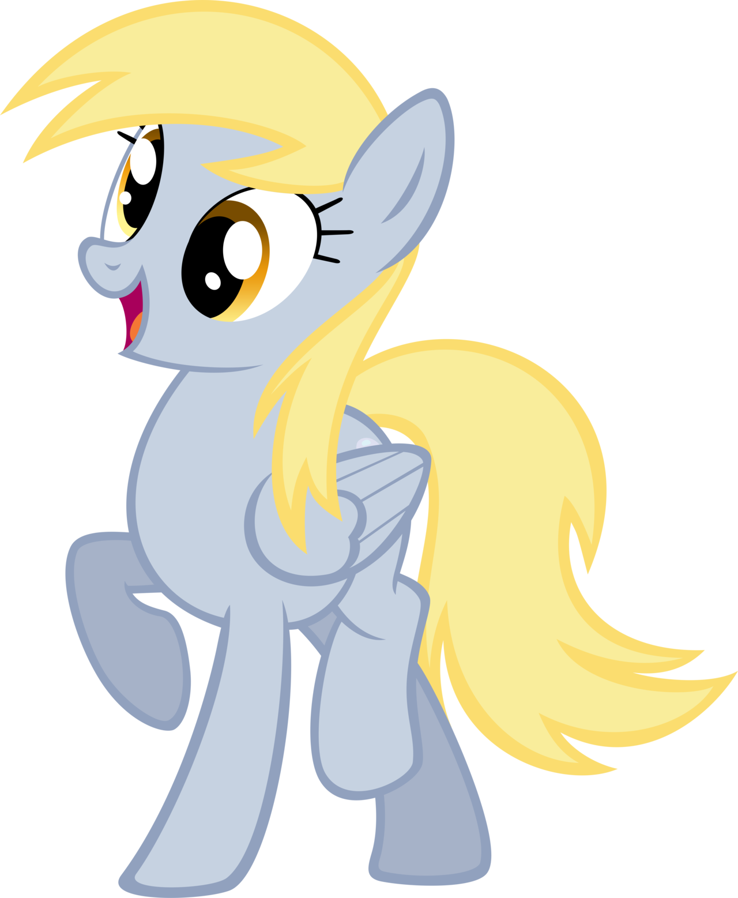

What is color theory? Color theory is both the science and art of using color. It explains how humans perceive color; and the visual effects of how colors mix, match or contrast with each other. ... In color theory, colors are organized on a color wheel and grouped into 3 categories: primary colors, secondary colors and tertiary colors.
The seven major color schemes are monochromatic, analogous, complementary, split complementary, triadic, square, and rectangle (or tetradic).
Primary colors are a set of colorants that can be mixed in all different ways to produce other colors. It is an essential method used to create the perception of a broad range of colors.
The three most known primary colors are Red, Yellow and Blue. These 3 are also taught in schools as being the three main colors needed to mix any and all colors on the wheel.
Secondary Colors are what you get from mixing 2 primary colors adjacent to eachother on the color wheel. The main 3 secondary colors are Orange, Green and Violet/Purple. These 3 colors can also be mixed to create more colors, just like their predecessors on the Primary spectrum.
Tertiary Colors are teh combination colors of the Primary and Secondary colors. They are known as tertiary or intermediate colors du to their compound nature. Examples of these mixtures include Blue-Green, Red-Orange, Red-Violet and Yellow-Green.
In color theory, a color scheme is the choice of colors used in various artistic and design contexts. For example, the "Achromatic" use of a white background with black text is an example of a basic and commonly default color scheme in web design.
Monochromatic
Monochromatic colors are all the colors of a single hue, eriving from a single base hue and extending using shades, tones and tints. If you were to use a monochromatic color cheme, it would mean that a single base color forms the foundation of teh room's color design. It would also mean that even though various shades and tones of that color can accent the space, there are no other colors present. Many rooms in old European castles have monochromatic color schemes. There are even some rooms in the White House that use this color scheme.
Complementary
Complementary colors are pairs of colors which, when combined or mixed, cancel each other's hue to produce an achormatic light mixture. When placed next to each other, they create the strongest contrast for those two colors. They might also be called 'Opposite Colors'.
Split Complementary
Split Complementary, also called compound harmony, is a color scheme of a three-color combination consisting of 1 base color and 2 colors that are 150 degrees and 210 degrees apart from the base color. It has the same sharp visual contrast as the complementary color scheme, but has less pressure.
Analogous
Analogous, also called dominance harmony. These color schemes are groups of colors that are adjacent to each other on the color wheel, with one being the dominant color (which tends to be a primary or secondary color) and two on either side complementing, which tend to be tertiary.
Triadic
This color scheme is a three-color combination consisting of one base color and 2 colors that are 120 degrees and 240 degrees apart from the base color; in the shape of a triangle, hence the name Triadic. These color schemes tend to be quite vibrant. Even when using pale or unsaturated versions of hues, it offers a higher degree of contrast while also retaining the color harmony.
Tetradic
Also called double complementary, this color scheme is considered the richest because it uses four colors arranged into two complementary color pairs. The scheme is hard to harmonize and requires a color to dominate or subdue the colors; if all four colors are used in equal amounts, the color scheme may look unbalanced.
Polychromatic
The term Polychromatic means having several colors. It is used to describe light that exhibits more than one color, which also means that it contains radiation of more than one wavelength. The study of polychromatic is particularly useful in the production of diffraction gratings.
Color Palettes
What is a color palette?

A color palette, also known simply as a palette, refers to the full range of colors that are displayed in the given image. Ie, the canvas or the screen.

I'm going to be talking about the different color palettes used in the show and the fandom. Specifically, the differences between character colors in the show (G4) and character colors of the fandom that have varied and/or are similar.
I will try my best not to critique too much with certain examples, as everyone has different opinions, and I do not wish to start or cause any conflict.
Derpy | Canon Character

King Sombra | Canon Character
Princess Celestia | Canon Character
Fluttershy | Canon Character

Marph | OC by @Marph92 on Twitter

Serene Starfall | OC by @Xantetsuken on Twitter | Drawn by me
Sparkly Keys & Leila Sky | OC by me and Sacred | Drawn by Cupute
Asuka | OC by @GTXMP on Twitter
Brick Masher | OC by @GoKeNSan92 on Twitter | Drawn by me


:max_bytes(150000):strip_icc()/KZ8O0W-5abd0d4fa18d9e0037e877ab.jpg)